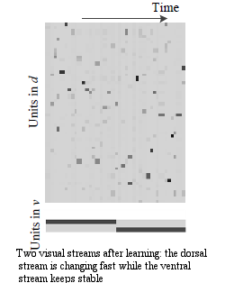
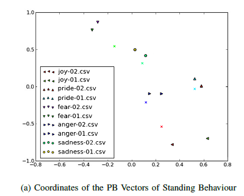

About
About Me
My name is Junpei 'Joni' Zhong, a junior researcher at Lab for Intelligent Dynamics and Representation, Waseda University, Tokyo. I'm also a visiting researcher at Plymouth University. My research is committed to build learning models for artificial cognitive systems. In most cases, such models are inspired by biologial systems.
Education
Dr.rer.nat. July 2010 - April 2015
Department of Computer Science, Uni. of Hamburg, DE.
M.Phil. Oct 2007 - Oct 2009
Department of Electrical Engineering, The Hong Kong Polytechnic Uni., HK.
B.Eng Sep 2002 - Sep 2006
Double degrees in Control Science and Computer Science, South China Uni. of Tech., CN.
Experience
Marie Curie Early Stage Researcher, University of Hamburg, 2010 - 2013
Visiting Researcher, Computing and mathematics, Uni. of Plymouth, 2011 - 2013, 2016-present
Research Fellow, School of Computer Science, Uni. of Hertfordshire, 2014
Postdoc Researcher, Computing and mathematics, Uni. of Plymouth, 2015
Junior Researcher (Fixed-term Assistant Professor), Lab for Intelligent Dynamics and Representations, Waseda University, 2016
- Languages Skills:
Cantonese (Mother Language), English (Proficiency), Chinese (Proficiency), German (Fair)
- My current research encompasses the following interrelated research themes:
1. Computational neuroscience, particularly the visual system modelling, and its relation into the affordance learning in the sensorimotor system;
2. Bootstrap learning for visual perception on robotic systems;
3. Psychology, philosophy and their contributions to developmental robotics. Besides, my previous research also includes SLAM, and its biological-inspired solutions.
- Service and other Professonal Activities:
Program Committee,
The International Conference on Artificial Neural Networks, Hamburg, DE.
Local Chair,
Postgraduate Conference on Robotics and Development of Cognition (RobotDoC- PhD), Lausanne, CH.
Ad-hoc reviewer,
IET Control Theory and Applications
International Conference on Artificial Neural Networks
International Journal of Control, Automation and Systems
Optics Communications
Applied Mathematics and Computation
Copyright © 2015 J. Zhong All rights Reserved | Template by W3Layouts

Research
research
Multi-robot SLAM

Feedback pathways in sensorimotor system
Neural learning for emotion recognition
Language acquisition by embodiment
Copyright © 2015 J. Zhong All rights Reserved | Template by W3Layouts
publications
publications
THESIS
Utilization and Optimization for Particle Filtering Multi-robot SLAM
Supervisor: Dr.
Y.F. Fung, MPhil Thesis, Department of
Electrical Engineering, The Hong Kong Polytechnic University, Hong Kong
Artificial Neural Network for Feedback Pathways for Sensorimotor Integration
Supervisor: Prof.
S. Wermter, Doctoral Thesis, Department of
Computer Science, University of Hamburg, Germany
JOURNALS
Zhong, J.P., Fung Y.F. and Dai M.J. Ant Colony Optimization Assisted Particle Filters. International Journal of Control, Automation, and Systems. pp. 519-526, June, 8(3), 2010.
Zhong, J., and Fung, Y.F. Case Study and Proofs of Ant Colony Optimisation Improved Particle Filter Algorithm. IET Control Theory and Applications. pp. 689-697, 6(5), 2012.
Zhong, J., Weber, C. and Wermter, S. A Predictive Network Architecture for a Robust and Smooth Robot Docking Behavior. Paladyn. Journal of Behavioral Robotics.pp. 172–180,3(4), 2012b.
Zhong, J., Cangelosi, A. and Wermter, S. Towards a self-organizing pre-symbolic neural model representing sensorimotor primitives . Frontiers in Behavioral Neuroscience, 8:22, 2014
J. Zhong, M. Peniak, J. Tani, T. Ogata, and A. Cangelosi. Sensorimotor input as a language generalisation tool: A connectionist model for generation and generalisation of noun-verb combinations with sensorimotor inputs (submitted). Autonomous Robots, 2016
X. Zhang, J. Zhang, and J. Zhong. Bio-mimetic perception-action integration toward intelligent behaviors for an autonomous robot: A view from hierarchical temporal memory (submitted). IEEE Transactions on Cognitive and Developmental Systems, 2016
CONFERENCE PAPERS
Zhong, J.P. and Fung, Y.F., A Biological Inspired Improvement Strategy for Particle Filters. Proceedings, IEEE 2009 International Conference on Industrial Technology (ICIT 09), Australia, pp. 1-6, 10-13 Feb 2009.
Zhong, J.P. and Fung, A Detailed Analysis of the Ant Colony Optimization Enhanced Particle Filters.Proceedings of the Internatonal Conference on Electric and Electronic (EEIC 2011), LNEE 98, pp. 641-648, Springer Heidelberg. Nanchang, China, June 2011.
Zhong, J.P., Weber, C. and Wermter S., Robot Trajectory Prediction and Recognition based on a Computational Mirror Neurons Model. In Honkela, T., Duch, W., Girolami, M., Kaski, S., editors, Proceedings of the 21st International Conference on Artificial Neural Networks (ICANN 2011), Part II, pp. 333-340, Espoo, Finland, June 2011.
Zhong, J., Weber, C. and Wermter, S. Restricted Boltzmann Machine with Transformation Units in a Mirror Neuron System Architecture. In Narioka, K., Nagai, Y., Asada, M., Ishiguro, H., editors, Proceedings of the IROS2011 Workshop on Cognitive Neuroscience Robotics (CNR), pp. 23-28, San Francisco, CA, USA, September 2011.
Zhong, J., Weber, C. and Wermter, S. Learning Features and Transformations with a Predictive Horizontal Product Model. Proceedings of Sixteenth International Conference on Cognitive and Neural Systems, ICCNS 2012, Boston, USA, 2012.
Zhong, J., Weber, C., and Wermter, S. Learning Features and Predictive Transformation Encoding Based on a Horizontal Product Model. In Villa, A.E.P., et al., editors, Proceedings of the 22nd International Conference on Artificial Neural Networks (ICANN 2012), Part I, LNCS 7552, pp. 539-546, Springer Heidelberg. Lausanne, CH, September 2012.
Zhong, J. and Canamero, L. From Continuous Affective Space to Continuous Expression Space: Non-verbal Behaviour Recognition and Generation (Accepted). The Fourth Joint IEEE International Conference on Development and Learning and on Epigenetic Robotics (ICDL-EpiRob 2014).
Zhong, J., Novianto,R., Dai, M., Zhang, X., and Cangelosi, A. A hierarchical emotion regulated sensorimotor model: Case studies . The 5th International Conference on Data-Driven Control and Learning Systems. 2016
Copyright © 2015 J.Zhong All rights Reserved | Template by W3Layouts

Links
Links
Collaborators
Dr. Lola Cañamero (Adaptive Systems, University of Hertfordshire)
Prof. Angelo Cangelosi (CRNS, University of Plymouth)
Dr. Yu-fai Fung (EE, The Hong Kong Polytechnic University)
Dr. Rony Novianto (University of Technology Sydney)
Prof. Peter Sinčák (CIT, TU Kosice)
Prof. Dr. Stefan Wermter (WTM, University of Hamburg)
Copyright © 2015 All rights Reserved | Template by W3Layouts
Bio-inspired Particle Filter and its SLAM application
The utilization of multi-robot systems has a major advantage when comparing to single robot systems, for example, with multiple robots working together, it has the potential to accomplish a task faster than a single robot. However, when a team of robots is sharing the same worksite, the Simultaneously Localization and Mapping (SLAM) problem becomes much more difficult to resolve because a huge amount of information is needed to be processed as well as analyzed. But on the other hand, multi-robot SLAM can be more efficient if robots can exchange and share information regarding their sensed data properly. In the SLAM problem, especially for Autonomous Underwater Vehicle (AUV) and Unmanned Aerial Vehicle (UAV), it is necessary to include non-linear and non-Gaussian parameters, for which the traditional Kalman Filter (KF) cannot yield ideal solution. In applications involving non-linear and non-Gaussian parameters, Particle Filters (PF), which are based on the concept of Monte Carlo simulation, are more suitable estimation techniques. However, in problems involving multiple dimensions, such as the multi-robot SLAM problem, when a huge number of particles are being used, two problems, namely particle impoverishment and sample size dependency, will occur during the particle updating stage and these problems will become more severe. The problems will reduce the accuracy of the estimation results and resampling algorithms, such as Sequential Importance Sampling, Stratified Resampling and Systematic Resampling are used to alleviate these two problems.
In my master thesis, a novel PF algorithm for tackling the particle impoverishment and sample size dependency problems is being studied and its application in a multi-robot system is examined. In this algorithm, Ant Colony Optimization (ACO) is incorporated into the generic particle filter in order to drive the proposal distribution to approximate the optimal solution. Mathematical proof and results obtained from a single variable estimation problem as well as from the robot localization problem show that, after the ACO optimization, better proposal distribution and more accurate estimation results can be obtained. In order to evaluate the performance of the ACO improved PF (PFACO) when applied to non-linear and non-Gaussian problems, such as the localization and SLAM problem, studies were conducted and utilization of PFACO algorithm for multi-robot systems was introduced. In a multi-robot environment, when two robots encounter, the same information on the same estimation problem represented by the two sets of particles will be re-evaluated based on information conveyed by particles from different sets. The particles are then merged into a single set and in such cases, parallel computing can be applied in order to reduce the processing time. By software simulation, our results are better than those from traditional approaches both in estimation error and execution time.
Artificial Neural Models for Feedback Pathways for Sensorimotor Integration
The brain comprises hierarchical modules on various physiological levels. Neural feedback signals (including lateral and top-down connections) modulate the neural activities via inhibitory or excitatory connections within/between these levels. They have predictive and filtering functions on the neuronal population coding of the bottom-up sensory-driven signals in the perception-action system.
In this thesis, we propose that the predictive role of the feedback pathways at most levels of action and perception can be modelled by the recurrent connections in different artificial cognitive platforms (simulation and humanoid robots). This will be examined by three recurrent neural network models. Furthermore, the three models and experiments with them show that the recurrent neural networks are able to model feedback pathways and to exhibit the feedback-related sensorimotor predictive functions. This work was sponsored by EU Marie Curie RobotDoc project
Part I:
In the first model, inspired by the study of neurobiology, we emphasize that the feedback connections facilitate a predictive mechanism to compensate for the neural delay in the two streams (ventral and dorsal) of the visual system. We model this with a novel recurrent network with a horizontal product. In the simulation, the recurrent connections give rise to the fast- and slow-changing neural activations in the dorsal- and ventral-like hidden layer. Particularly the recurrent connections build a feedback channel to predict the upcoming neural activity in the dorsal-like hidden layer, while another feedback channel maintains stable neural encoding in the ventral-like hidden layer. 
Publication: Zhong, Junpei, Cornelius Weber, and Stefan Wermter. "Learning features and predictive transformation encoding based on a horizontal product model." Artificial Neural Networks and Machine Learning–ICANN 2012. Springer Berlin Heidelberg, 2012. 539-546. [Code] [Paper]
Part II:
In the second part of the thesis, a sensorimotor integration model with visual prediction is implemented, whose visual perception part is considered to be the dorsal stream representation of the first model. This further augments the visual prediction with its role of guiding motor action. Together with the action module which adopts a continuous reinforcement learning algorithm, this model allows a smooth and faster docking behaviour for a humanoid robot.
Publication: Zhong, Junpei, Cornelius Weber, and Stefan Wermter. "A predictive network architecture for a robust and smooth robot docking behavior." Paladyn, Journal of Behavioral Robotics 3.4 (2012): 172-180. [Link][Code (Continuous Actor Critic)]
Part III:
In the third experiment, we propose that the source of the feedback pathway could be the high-level cognitive processes, such as pre-symbolic representations. Furthermore, the emergence of these cognitive processes and feedback-related sensorimotor functions are not independent processes but they integrate and assist each other in a hierarchical way. Therefore, we augment the first horizontal product model with additional units, called parametric bias (PB) units, as a pre-symbolic representation. In the robot experiments, we show that during the learning process of observing sensorimotor primitives, the pre-symbolic representation is self- organized in the parametric units; during prediction, these representational units act as a prior expectation which guides the robot to recognize and to expect various pre-learned sensorimotor primitives.
Publication: Zhong, Junpei, Angelo Cangelosi, and Stefan Wermter. "Toward a self-organizing pre-symbolic neural model representing sensorimotor primitives." Frontiers in behavioral neuroscience 8 (2014). [Link] [Code]
These three experiments demonstrate that implementation of the feedback pathways with recurrent connections can realize predictive sensorimotor functions. The emergence of these feedback pathways also accounts for the pre-symbolic representation in cognitive systems. Furthermore, we claim that the recurrent connections can be one of possible neural structures to build up the feedback pathways on the sensorimotor integration in artificial cognitive systems.
Neural learning for emotion recognition
In this work, a variant version of recurrent neural network is adopted to accomplish several tasks in non-verbal expression in emotions. This work was sponsored by EU ALIZ-E project.
Part I
Based on Recurrent Neural Network with Parametric Bias Units, we trained with a selection of the data on expressive human movement collected using an inertial motion capture system in the first year and analyzed subsequently. We discovered that the RNNPB has additional PB variables that act as bifurcation parameters for the non-linear dynamics. Therefore, the PB units constitute a small-dimensional space to reduce features and represent slow-changing profiles (such as emotion) of the features of body movements. Furthermore, in agreement with of our above-mentioned study on analysis of human movement and with the work presented in the previous subsection, this behavioral expression space should not be restricted to the basic emotions but should also be continuous.
 Publication Zhong, Junpei, and Lola Canamero. "From continuous affective space to continuous expression space: Non-verbal behaviour recognition and generation." Development and Learning and Epigenetic Robotics (ICDL-Epirob), 2014 Joint IEEE International Conferences on. IEEE, 2014. [Link]Part II
With kinect input and coordinate mapping, in the second part of we successfully used RNNPB to identify personalised emotion with their non-verbal bahaviours. In this way, our lab colleagues brought together affect recognition, expression, and the internal parameters of the emotion model into the embodied “cognitive architecture” of the NAO robot to generate a child behaviour with various emotion expressions, since in this case affective behavioral expression and recognition are directly linked to the affective space modeling the (continuous) internal affective states of the robot and their dynamics.
Publication Zhong, Junpei, and Lola Canamero. "A Personalised Emotion Recognition Learning Method for Assistive Humanoid Robot Systems" (In preparation). IEEE Transaction on Affective Computing.
Introduction of the final product of ALIZ-E project: (Credit www.aliz-e.org)
Modelling Language Acquisition by Embodied Sensorimotor Integration
From the perspective of "synthetic neural modelling", the robot offers a natural way to model the embodied construals of nouns and verbs during the acquisition of the complete sentence. Therefore developing a system that demonstrates some level of cognitive ability can lead to a better understanding of the neural machinery that leads to cognitive function.During the second year of age, infants start to associate the names with the visual information that appears in the receptive field. Particularly with dynamic scenes (e.g., a man lifting a ball), with the guidance of visual attention, infants could construe the scenes flexibly, noticing the consistent action (e.g., lifting) and the consistent object (e.g., the ball). Gradually their construals of the scenes were influenced by the words from the auditorial inputs (e.g. from their parents) so that they learn how to use grammatical form of a novel word used to describe them (verb or noun), and successfully mapped novel verbs to event categories (e.g., lifting actions) and novel nouns to object categories (e.g., balls). Moreover, infants’ representations were sufficiently abstract to permit them to extend novel verbs and nouns appropriately beyond the precise scenes on which they had been taught.
In the context of POETICON project, we conducted the robotic experiment by taking direct inspiration from this child psychology studies of verbs and nouns learning. We explore how this embodied interaction supports the learning of noval nouns and verbs. The iCub robot learns the novel object and a particular motor action with the guidance of instructor. The robot was allowed to learn part of the combination of the verbs and nouns (as shown in the table). However, the experimental result showed that the MTRNN network based neural learning allowed the robot to acquiare generalisation ability, which means that the robot is able to react with novel combinations that it has not learnt before. Further analysis also impled that the nouns and the verbs are emerged as two independent activations in the internal neurodynamics which spreads in both the spatial and temporal domains. The resulting model qualitatively captures the infant data and makes interesting predictions that are currently being explored with new child experiments.
Technically, in this project, I also participated the debugging and testing of Aquila Software (Cognitive Robotics Architecture).
| Training Set | Test Set |
|---|---|
| Lift the car | Lift the ball |
| Pull the tractor | Touch the car |
| Lift the ball | Pull the tractor |